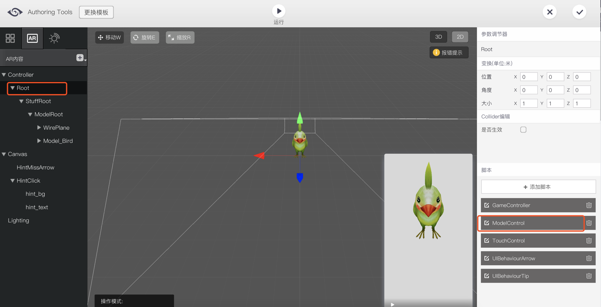
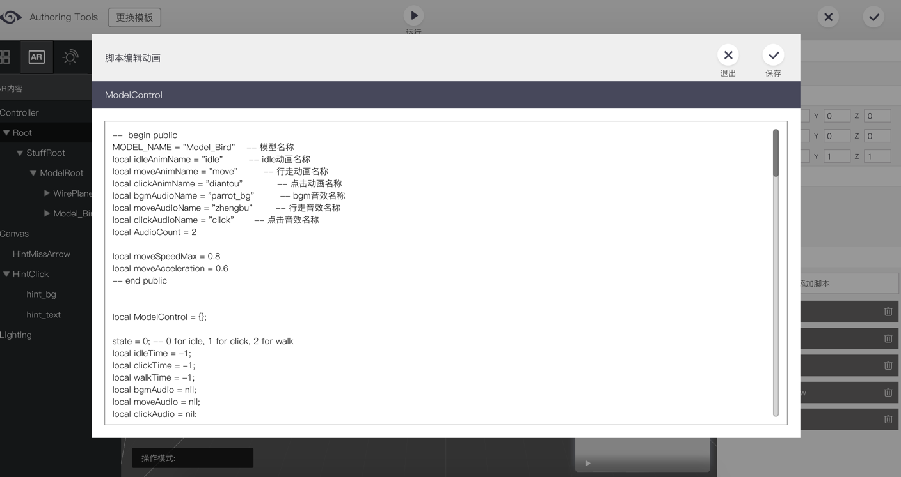

移动
在移动模板中，用户可以控制动画角色在平面上移动。用户点击手机屏幕，动画角色会按照既定的速度移动至点击处。
制作指引
导出3D内容
请参照AR资源制作规范。
导入3D内容
点击AR内容的『+』按钮，选择『上传3D模型』。上传模型FBX文件后，勾选『启用动画』，随后上传动画FBX文件。
在指尖跟随模板中，建议上传至少两段动画：
『默认播放的动画』即模型在非移动状态时的动作。
『移动时播放的动画』即模型在移动过程中的动作。
此外，还可以选择上传点击模型触发的『点击时播放的动画』。
设置3D内容
导入动画模型后，将模型推拽至controller下，成为其子物体。并将带有“ReplaceMe"标记的预置的物件删除。
设置参数
点击左侧的Root物件，在右侧的脚本列表中，点击“ModelControl”脚本。进入脚本编辑器页面。模型名称：将Model_Bird名称修改为你上传的模型名称
动画名称：将各段动画名称替换为你上传的动画名称，若无相关动画，则名称为空
音效名称：将音效名称替换为你上传的音效名称，若无音效，则名称为空
AudioCount: 输入音效文件的数量